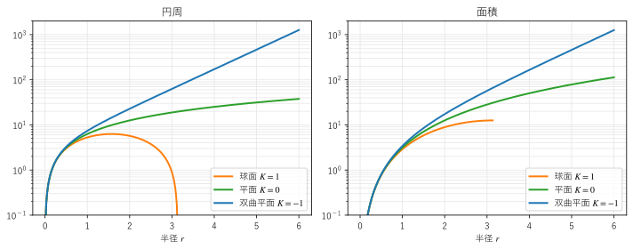
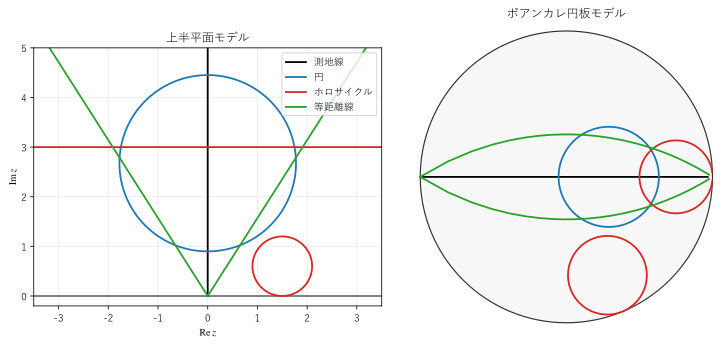
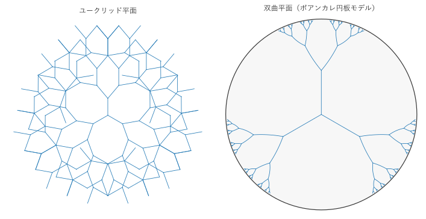

第 7 章 円・ホロサイクル・指数的な広がり
ユークリッド平面では、「1 点から等距離にある点の集まり（円）」と「直線から等距離にある点の集まり（平行な直線）」は、どちらもおなじみの曲線である。双曲平面では、これらに対応する曲線が 3 種類に分かれる。この章では、それらの曲線を紹介し、双曲平面で円周や面積が半径とともに指数関数的に増えることを示す。この性質は、第 9 章の応用の基礎になる。
円周と面積
双曲平面で、点 \(P\) からの距離が \(r\) の点の集まりを、中心 \(P\)、半径 \(r\) の円という。円板モデルで中心を原点に置くと、円はユークリッドの半径 \(\rho = \tanh(r/2)\) の円になる（第 4 章）。円板モデルの計量 \(ds = 2|dz| / (1 - |z|^2)\) から、円周の長さは
となる（付録 Aの倍角の公式 \(\sinh r = 2 \tanh(r/2) / (1 - \tanh^2(r/2))\) を使った）。面積は、円周を半径で積分して
である。
小さな \(r\) では \(\sinh r \approx r\)、\(\cosh r - 1 \approx r^2/2\) なので、ユークリッドの \(2\pi r\)、\(\pi r^2\) に近い。大きな \(r\) では \(\sinh r \approx \cosh r \approx e^r / 2\) なので
となり、どちらも半径の指数関数で増える。図 9は、球面、平面、双曲平面で、円周と面積を比べたものである（縦軸は対数目盛り）。


図 9 半径 \(r\) の円の円周（左）と面積（右）
サンプルの全体：ch07_growth.py
双曲平面のグラフは、\(r\) が 2 を超えるあたりから直線（指数関数）になる。半径を 1 増やすごとに、円周も面積もおよそ \(e \approx 2.7\) 倍になる。たとえば \(r = 10\) の円の面積は約 \(6.9 \times 10^4\) であり、同じ半径のユークリッドの円の面積 \(314\) の 200 倍以上である。
大きな円では、面積と円周がほぼ等しい（\(A \approx L\)）ことにも注意する。円の面積のほとんどが、円周のすぐ内側の細い帯に集中している。ユークリッド平面では \(A / L = r/2\) であり、面積は円の内部に広く分布するのとは対照的である。
3 種類の「等距離」の曲線
双曲平面では、円に関連して次の 3 種類の曲線が現れる。
円：1 点からの距離が一定の点の集まり。
ホロサイクル：無限遠点を中心とする「半径が無限大の円」。円の中心を測地線に沿って無限遠点まで遠ざけ、円がある 1 点を通るように半径を大きくしていった極限である。
等距離線：1 本の測地線からの距離が一定の点の集まり（測地線の片側の部分）。
ユークリッド平面では、半径が無限大の円は直線になり、直線からの等距離線も直線になるので、3 種類目と 2 種類目は直線と区別がつかない。双曲平面では、ホロサイクルも等距離線も測地線ではない曲がった曲線である。
上半平面モデルと円板モデルで、これらを描いたものが図 10である。


図 10 測地線（黒）、円（青）、ホロサイクル（赤）、等距離線（緑）
サンプルの全体：ch07_curves.py
図の曲線は、モデルの上ではどれもユークリッドの円（または直線）の一部として描かれる。どの種類かは、無限遠の境界との位置関係で見分けられる。
曲線 |
境界との関係 |
上半平面モデル |
円板モデル |
|---|---|---|---|
円 |
境界と交わらない |
上半平面の中にあるユークリッドの円 |
円板の中にあるユークリッドの円 |
ホロサイクル |
境界に 1 点で接する |
実軸に接する円、または水平な直線（中心が \(\infty\)） |
単位円に内側から接する円 |
等距離線 |
境界と 2 点で交わる（直交しない） |
測地線と同じ 2 つの無限遠点を通る円弧、または直線 |
測地線と同じ 2 つの無限遠点を通る円弧 |
測地線 |
境界と 2 点で直交する |
実軸に直交する半円、または垂直な半直線 |
単位円に直交する円弧、または直径 |
上半平面モデルでは、虚軸からの距離が \(d\) の等距離線は、原点を通る半直線 \(|x| / y = \sinh d\) である。第 5 章の図 7の右で、双曲型の変換が点を動かした軌跡がこの半直線であった。同様に、放物型の変換 \(z \mapsto z + t\) の軌跡である水平な直線はホロサイクルであり、楕円型の変換の軌跡は円である。3 種類の等長変換と 3 種類の曲線は、このように対応している。
指数的な広がりと木構造
円周が半径の指数関数で増えることは、木構造（ツリー）と相性が良い。各頂点から 2 本ずつ枝分かれする木では、根からの深さが \(n\) の頂点が \(2^n\) 個ある。頂点の数も、深さの指数関数で増える。
辺の長さと枝分かれの角度を一定にして、同じ木をユークリッド平面と双曲平面（円板モデル）に描いたものが図 11である。根から 3 本の枝を出し、その先は各頂点から 2 本ずつ枝分かれさせ、深さ 6 まで描いた。


図 11 辺の長さと枝分かれの角度が等しい木。ユークリッド平面（左）と双曲平面（右）
サンプルの全体：ch07_tree.py
ユークリッド平面では、深さ \(n\) の頂点が置ける場所（半径およそ \(n\) の円周の長さ）は \(n\) に比例してしか増えないので、深くなるにつれて枝が重なり合う。双曲平面では、置ける場所が深さの指数関数で増えるので、枝は重ならずに広がっていく。円板モデルの図では深い枝が境界に押し込められて小さく見えるが、双曲平面の中ではどの辺も同じ長さである。
この性質は、次のように言い表せる。双曲平面には、木構造を、頂点間の距離をあまりゆがめずに描き込める（埋め込める）。ユークリッド平面に木を描くと、次元をいくら上げても、遠い頂点どうしが近くに置かれるゆがみが避けられない。第 9 章で扱う機械学習の双曲埋め込み、ネットワークのモデル、ツリーの可視化は、どれもこの性質を利用している。
この章のまとめ
双曲平面の半径 \(r\) の円の円周は \(2\pi \sinh r\)、面積は \(2\pi (\cosh r - 1)\) であり、大きな \(r\) ではどちらも \(\pi e^r\) に近い。
1 点、無限遠点、測地線からの「等距離」の曲線として、円、ホロサイクル、等距離線の 3 種類がある。これらは、楕円型、放物型、双曲型の等長変換の軌跡に対応する。
双曲平面は指数関数的に広がるので、木構造をゆがみ少なく描き込める。